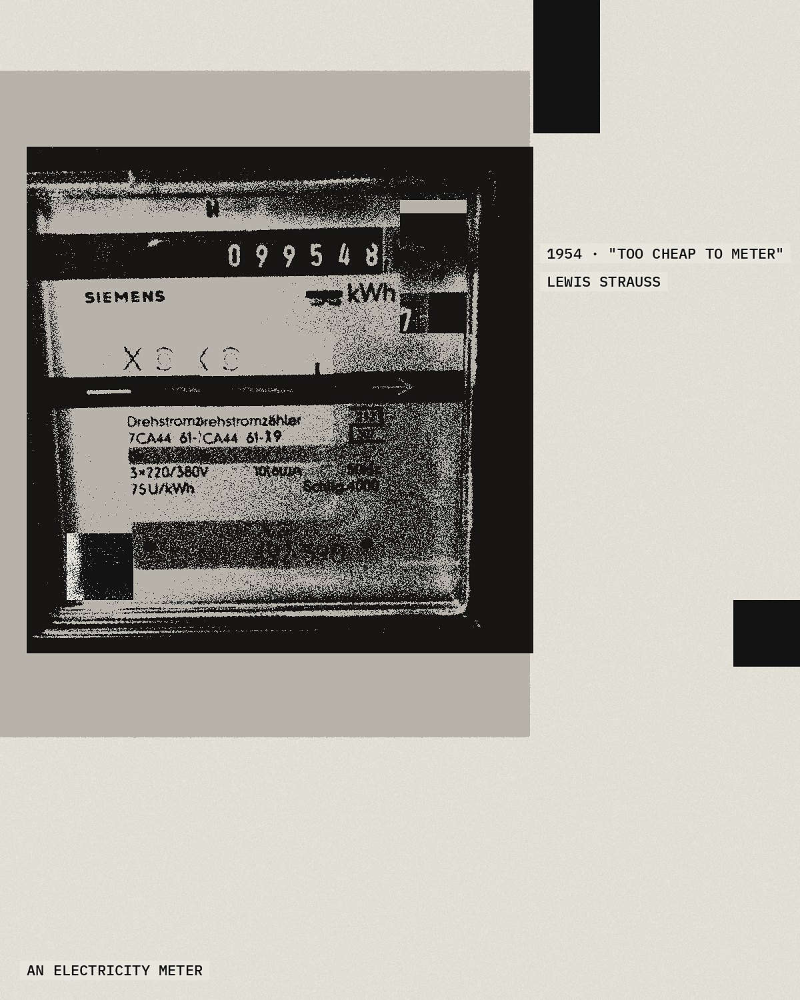

Abundance
Abundance is the tech industry's word for a coming world where AI makes intelligence, energy and goods so cheap that everyone has enough.
In the AI industry, abundance names a promise: machines will do so much of the work that prices fall and every need is met. Its holders speak of cheap intelligence, cheap energy and enough for everyone.
Peter Diamandis, a co-founder of Singularity University, and Steven Kotler made the case in their 2012 book Abundance. AI, robotics and other exponential technologies, they argued, would soon “meet and exceed the basic needs of every person on the planet”.
Sam Altman’s essays on AI return to the word, from “Moore’s Law for Everything” (2021) to “The Gentle Singularity” (2025). In the latter he writes that the cost of intelligence should fall to near the cost of electricity.

How the movements see it
Transhumanism
Nick Bostrom, a co-founder of the World Transhumanist Association, asks what comes after abundance. His Deep Utopia (2024) imagines a “solved world” where AI has made human effort unnecessary, and asks where meaning would then lie.
Singularitarianism
Sam Altman expects intelligence and energy to become “wildly abundant” in the 2030s. In September 2025 he titled a post on building AI infrastructure “Abundant Intelligence”.
Effective accelerationism
e/acc treats abundance as a matter of will. Its newsletter wrote in 2022 that only will stands between us and abundance for every human alive.
Techno-optimism
Marc Andreessen's 2023 manifesto uses the word again and again. Technology and markets, it says, bring material abundance for everyone, and falling prices are its measure.
Strands
Too cheap to meter
In 1954 Lewis Strauss, head of the US Atomic Energy Commission, told science writers the next generation would enjoy electricity “too cheap to meter”. Critics later made the phrase a byword for over-optimistic promises about nuclear power.
Thomas Wellock, “‘Too Cheap to Meter’: A History of the Phrase”, US Nuclear Regulatory Commission, nrc.gov; Robert Deis, This Day in Quotes, September 2015, on the speech of 16 September 1954 to the National Association of Science Writers
Moore's law for everything
In 2021 Sam Altman argued that AI would lower the cost of goods and services, because labour drives costs along supply chains. Housing, education and food would keep getting cheaper. To share the gains, he proposed an American Equity Fund, taxing large companies and land to pay every adult citizen a yearly share.
Sam Altman, “Moore's Law for Everything”, moores.samaltman.com, 16 March 2021
The abundance agenda
Same word, different meaning. In US politics, Ezra Klein and Derek Thompson's book Abundance (2025) argues for clearing the rules that slow housing, infrastructure and clean energy. Its subject is building, not AI.
Ezra Klein and Derek Thompson, Abundance, Avid Reader Press, March 2025; review, Publishers Weekly, 7 March 2025
Related words
post-scarcity · too cheap to meter · Moore's law for everything · abundant intelligence · universal basic income · the solved world · the abundance agenda
In the movements' histories
Who disputes it
Daron Acemoglu and Simon Johnson argue that choices and power, not the technology itself, decide who gains from it (Power and Progress, 2023). Aaron Benanav argues that weak demand for labour comes from slowing growth, not automation (Automation and the Future of Work, 2020). Kate Crawford warns that generative AI's costs in energy and water are soaring and mostly kept secret (Nature, 2024).